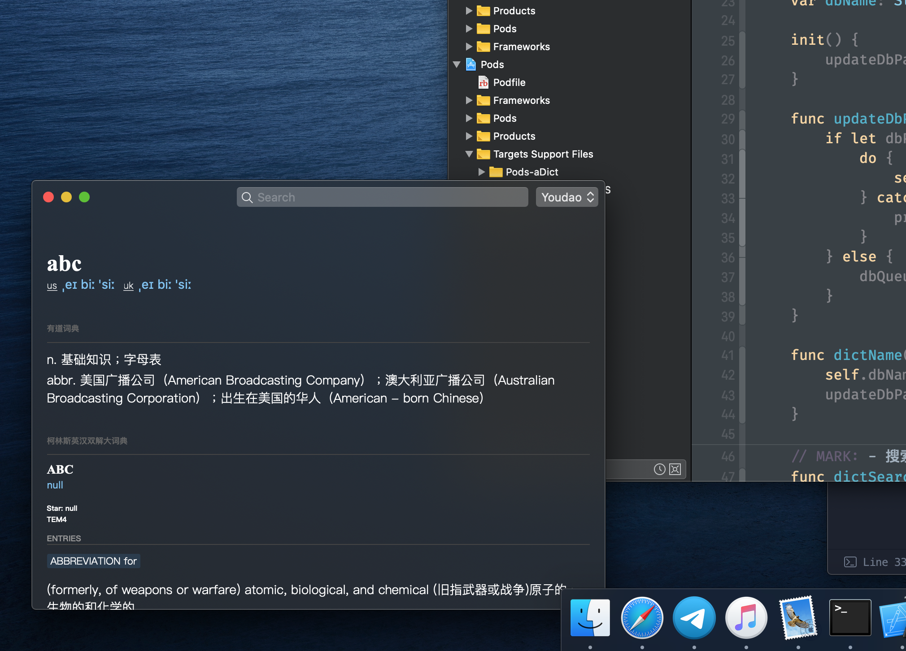
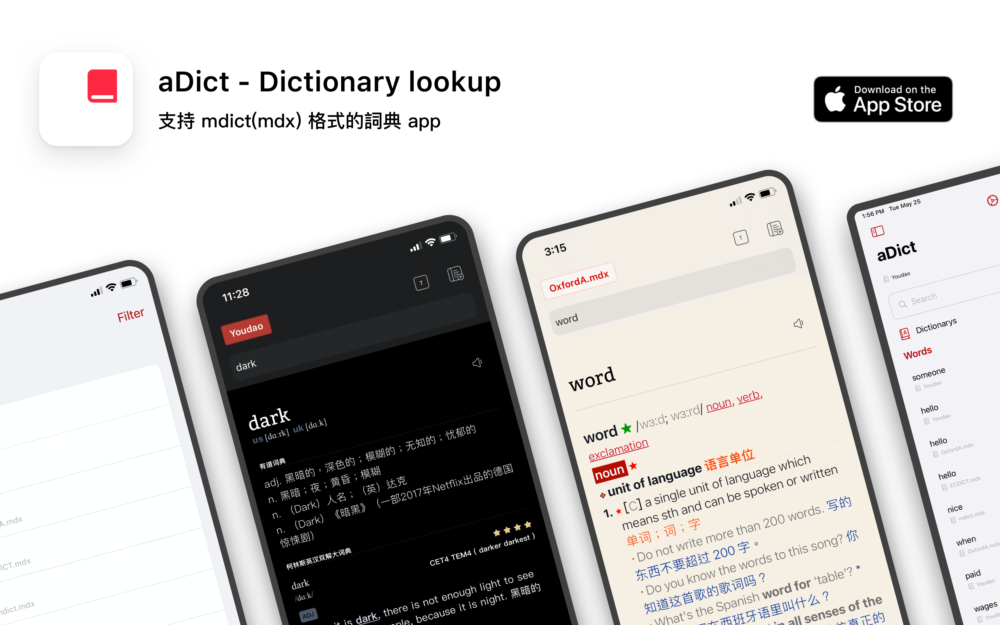
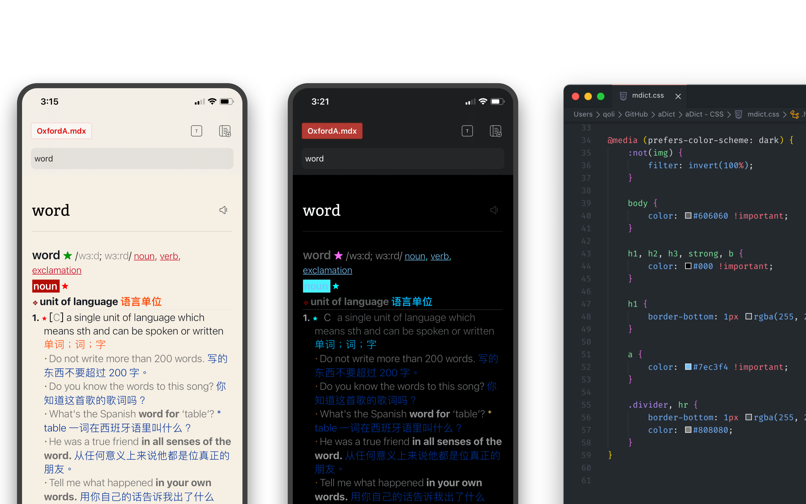

Writing
aDict 的演化歷史：從順眼的查詞工具到本地詞典架構
aDict,iOS,macOS,Swift,Dictionary,Product · 2026-04-26
aDict 的起點，不是一個宏大的詞典平台。
它更像是一個很小、但反覆出現的個人需求：我寫程式時，需要一個在 Mac 和 iOS 上都足夠輕、足夠順眼，並且在 Dark Mode 裡不刺眼的查詞工具。
從 2019 到 2026，aDict 的方向一直在變清楚。1.0 先解決「看起來舒服」；2.0 開始接住使用者自己的詞庫；2.4 回到低頻工具更合適的商業模型；3.0 則把重點推向更長期的架構維護。
這篇文章想整理的，不只是幾次版本更新。更重要的是：一個順手的小工具，如何慢慢變成一套有邊界、有協議、也能被驗證的本地詞典系統。
2019 年 11 月：從不滿意的工具開始
2019 年 11 月前後，aDict 1.0 的起點很樸素。我當時經常需要查單詞，用來確認變量名、函數名，或者註解裡的用詞。這不是背單詞場景，而是編程工作裡非常高頻的小動作。
那時我長期使用有道詞典。但 macOS Catalina 和深色模式出來之後，我越來越不能接受它的視覺表現。查詞是一件很短的事，可界面如果刺眼、擁擠、不跟系統風格走，就會在每一次使用時打斷工作。
所以第一版 aDict 不是奔著功能爆炸去的。它先要把查詞這件小事做舒服：有道 API、離線英漢 / 漢英詞典、漢典、粘貼板搜索、文字大小、背景色、Dark / Light 的低對比度版本，以及一個可以停在屏幕角落的 macOS 查詞窗口。

這一階段真正留下來的產品判斷是：詞典 App 不只是資料源，它也是閱讀界面。資料再對，如果排版粗糙、顏色刺眼、深色模式失控，使用感仍然會失敗。
2019-2020：讓查詞入口更貼近系統
2019 年底到 2020 年間，1.x 的更新更多是在把 aDict 接入 Apple 平台的日常使用節奏。iOS 端加入 Today Widget、語音朗讀、語音輸入、短語翻譯和 iPad 支持；macOS 端則補上雙複製查詞、窗口置頂、粵語詞典、漢典、沙盒與 App Store 提交流程。
這些功能看似分散，但共同目標很一致：降低查詞發生的摩擦。使用者不應該每次都打開一個笨重工具，再重新選詞典、重新輸入、重新適應界面。aDict 想成為系統邊上的一個輕入口。
2020-2021 年 5 月：走向使用者自己的詞庫
2.0 的工作在 2020 年已經開始準備，但直到 2021 年 5 月，我才把它整理成正式更新文章。這是第一次真正改變產品重心的版本：aDict 不再只是包裝得更好看的在線查詞工具，而開始支援使用者自己的詞庫。

MDict 支持是一個分水嶺。對很多專業使用者而言，詞典資料不是 App 提供什麼就用什麼，而是自己長期積累、挑選和維護的 mdx 文件。aDict 2.0 讓使用者可以把 mdx 文件放進 App 目錄，必要時配合同名 CSS，然後在 App 內直接查詢。
Words 和 iCloud 同步也在這個階段成為主線。查詞不再只是一次性輸入和返回結果，它開始涉及收藏、同步、詞庫文件管理，以及跨設備延續使用。
這也帶來新的設計問題。很多 mdx 詞庫本身沒有為深色模式準備樣式，直接渲染會很難讀。aDict 因此嘗試用 CSS 色彩反轉等方式，讓老詞庫在新系統視覺中盡量可讀。

這不是很華麗的功能，但它很符合 aDict 的原始價值：查詞結果必須看起來舒服。從這裡開始，aDict 的問題已經不只是「怎麼查」，而是「怎麼穩定地承載使用者自己的詞典資料」。
2024 年 1 月：回到低頻工具的商業模型
到 2024 年 1 月的 2.4 更新，aDict 做了一個看似和技術無關、但很重要的決定：取消訂閱，改為一次性買斷。

這個決定反映了我對產品性格的判斷。aDict 是低頻但長期存在的工具，不適合用持續壓迫感很強的商業模型推動。使用者可能不是每天都打開它，但需要它時，希望它一直可靠地在那裡。
免費版本保留有道查詢。Pro 解鎖 Words、MDict、iCloud 同步和更多詞典能力。這種分層不是為了把日常查詞鎖起來，而是讓進階使用者為自己的本地詞庫和資料管理能力付費。
2026 年 4 月：不是重做 UI，而是重建邊界
2026 年 4 月 25 日形成的 3.0 重寫方案，看起來像一次重寫，但真正要重寫的不是外觀，而是責任邊界。舊版已經證明產品方向成立：它輕巧、美觀，支援 iOS / iPad / macOS，也支援 MDict 和 iCloud。
問題在於，隨著功能堆疊，查詞流程、Provider 分派、HTML 組裝、WebView bridge、狀態持久化和本地文件管理逐漸糾纏在一起。繼續在舊結構上修補，只會讓每一個新增能力都變得更重。
3.0 的核心，是把 aDict 重新拆成幾個清楚的部分：App Shell 負責 Apple 平台體驗；Lookup Protocol 定義查詞語義；Dictionary Service 負責分派 Provider；Youdao、MDict、StarDict 各自成為 Provider；WebView Runtime 只負責渲染 HTML、CSS、資源和 bridge。
這裡有一個重要轉變：WebView 仍然重要，因為詞典內容天然包含 HTML、CSS 和本地資源；但 WebView 不應該反過來定義查詞模型。notFound 是一次成功完成但沒有結果的查詞，不應該和 parse failure、network failure 或 dictionary unavailable 混在一起。
2026 年：CLI-first，讓詞典格式先能被驗證
到 2026 年的 3.0 設計裡，最關鍵的工程前置是 MDictCLI。它不是臨時腳本，而是 native MDict parser 的正式驗證面。inspect、lookup、suggest、resources、extract-resource 這些能力先在 CLI 中跑通，再接回 App 的 MDictProvider。
這個決定讓 aDict 的本地詞庫能力不再依賴 App 內某段難以測試的 JS parser，也不再依賴 WebView 路徑。MDictCLI 可以獨立測、獨立演進，未來 StarDictCLI 也可以對齊同一套 aDictProtocol。
aDict 由此從一個 App 工程，變成一組可驗證的詞典工具鏈。這是 3.0 真正有價值的地方：它不是為了重寫而重寫，而是讓本地詞典能力有機會長期維護。
演化之後，留下的是同一個問題
從 2019 到 2026，aDict 的技術棧變了很多：UIKit、Storyboard、SwiftUI、WebView、iCloud Documents、SQLite、MDictCLI、Provider Protocol。但真正沒有變的是那個起點。
我想要一個不打擾我、但在需要時足夠可靠的查詞工具。
1.0 解決的是看起來舒服。2.0 解決的是使用者自己的詞庫。2.4 解決的是低頻工具應該如何被購買。3.0 則開始解決長期維護的問題。
這也是 aDict 演化裡最有意思的部分：它不是從小工具變成大平台，而是從一個順眼的查詞入口，慢慢變成一個有邊界、有協議、能被驗證的本地詞典系統。
時間線小結
- 2019 年 11 月：aDict 1.0 形成，重點是輕巧、順眼、支援 macOS / iOS 的日常查詞。
- 2020-2021 年 5 月：2.0 從設計與重構拖到正式發布，新增 Words、MDict / mdx、iCloud 同步與 iPad 外觀。
- 2024 年 1 月：2.4 取消訂閱，改為一次性買斷，產品定位更貼近低頻但長期存在的工具。
- 2026 年 4 月 25 日：3.0 重寫方案形成，重點從功能堆疊轉向 Lookup Protocol、MDictCLI、Provider 與 WebView Runtime 的邊界重建。
參考來源
- aDict 1.0 介紹文章：https://www.notion.so/4b0c412762ea462b9bf3441dca3b80ab
- aDict 2.0 新功能：https://www.notion.so/fb1fe52cb0f54545ac750609a91f2c33
- aDict 2.4 新版本更新：https://www.notion.so/fc08e3d396ba4361a13862d10562929d
- aDict 3.0 重寫方案：https://www.notion.so/34dc1b36c40180cda5fddcd7e909dc99
Notion 公開地址：https://qoli.notion.site/aDict-34ec1b36c4018133ba41c6d9a03cbe2f